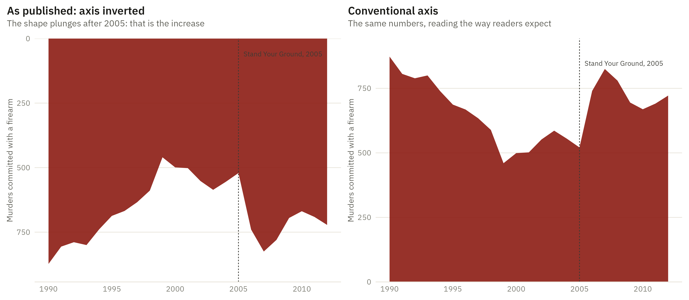

Show the R code
blood <- "#8C1C13"
p_data <- bind_rows(mutate(fl, how = "As published: axis inverted"),
mutate(fl, how = "Conventional axis")) |>
mutate(how = factor(how, levels = c("As published: axis inverted", "Conventional axis")))
base_layers <- list(
geom_area(fill = blood, alpha = .9),
geom_vline(xintercept = syg, colour = "#3a3a34", linewidth = .4, linetype = "22"),
labs(x = NULL, y = "Murders committed with a firearm")
)
# The label is placed at an explicit y per panel rather than at Inf: under
# scale_y_reverse, Inf is the BOTTOM of the frame, so an Inf-anchored
# annotation silently vanished off the top of the inverted plot.
top_of <- max(fl$firearm_murders)
lab <- function(y) annotate("text", x = syg + .4, y = y,
label = "Stand Your Ground, 2005", hjust = 0,
size = 2.8, colour = "#3a3a34", family = dsvar_font())
# Two different y transforms cannot live on one facetted plot, so these are
# two plots placed side by side. patchwork's guide collection and `&` are
# broken against ggplot2 4.x, so each is themed on its own. See the README.
p1 <- ggplot(fl, aes(year, firearm_murders)) + base_layers + lab(60) +
scale_y_reverse(expand = expansion(mult = c(.08, 0))) +
labs(title = "As published: axis inverted",
subtitle = "The shape plunges after 2005: that is the increase")
p2 <- ggplot(fl, aes(year, firearm_murders)) + base_layers + lab(top_of * .97) +
scale_y_continuous(expand = expansion(mult = c(0, .08))) +
labs(title = "Conventional axis",
subtitle = "The same numbers, reading the way readers expect")
library(patchwork)
p1 + p2